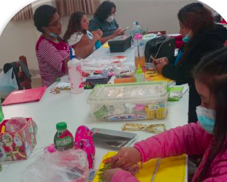

1º MANUALIDADES VARIADAS: Bisutería artesanal Bonsái con acrílico Flores con medias panty.
2º MANUALIDADES DECORATIVAS: Cojines con cintas entrelazadas Cojines decorativos Jabones y velas artesanales .
3º PINTURA DECORATIVA: Pintura en trupan Pintura en alto relieve Pirograbado – pintura en tela.
4º CERÁMICA AL FRIO : Centro de flores y modelado Decoración de botellas y tejas Pajareras navideñas.
5º MANUALIDADES NAVIDEÑAS: Cortineros, adornos y cojines navideños .
